Czech Republic, Poland & Austria
June 8–11, 2023

From June 8 to 11, 2023 we traveled from the Czech Republic into Poland and on toward Austria.
We flew into Prague on June 8. The next day we drove to a house rented outside Kraków. On June 10 we walked old town Kraków — the Main Square, the Sukiennice, and St. Mary’s Basilica — then toured the Wieliczka Salt Mine in the afternoon. On June 11 we drove to Zlín, then through Slovakia to Wiener Neustadt.


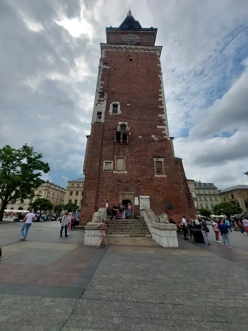

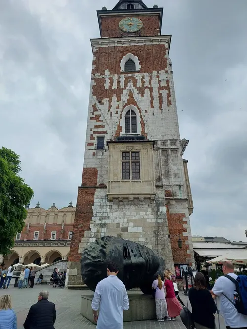

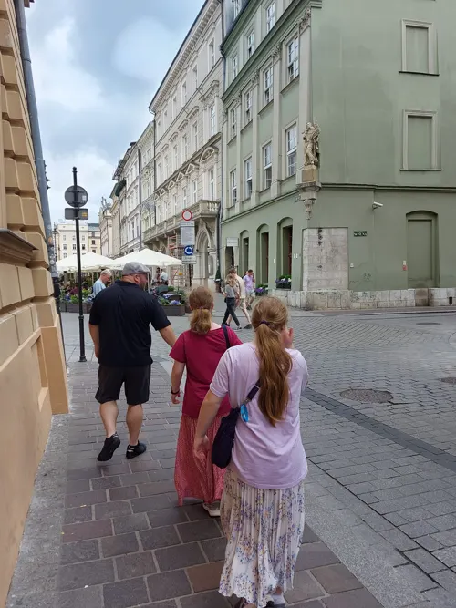

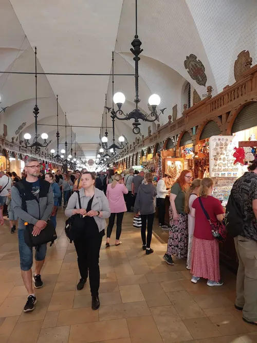

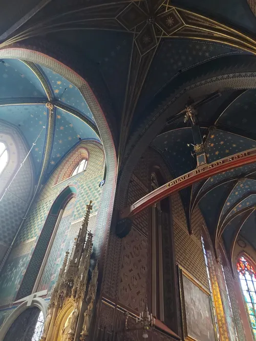

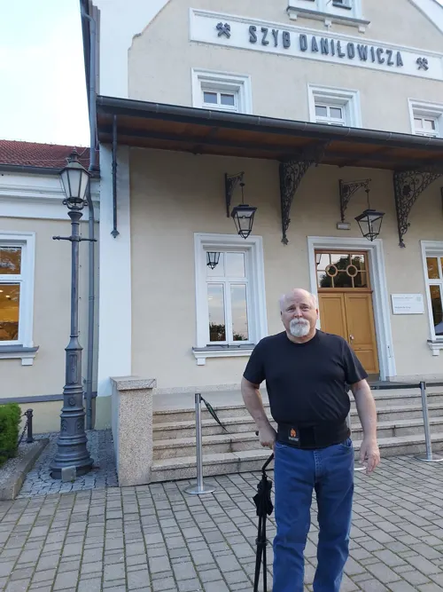

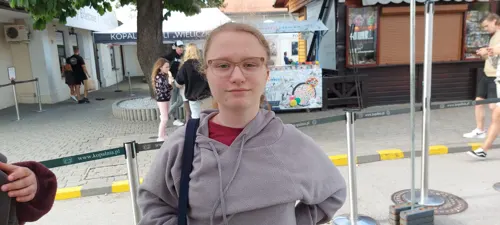

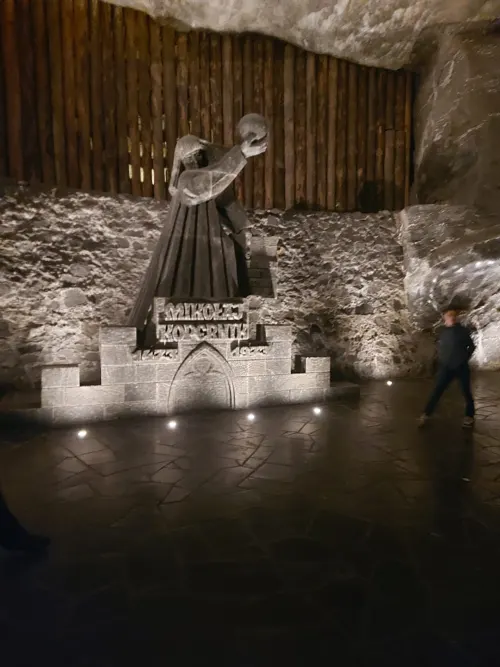

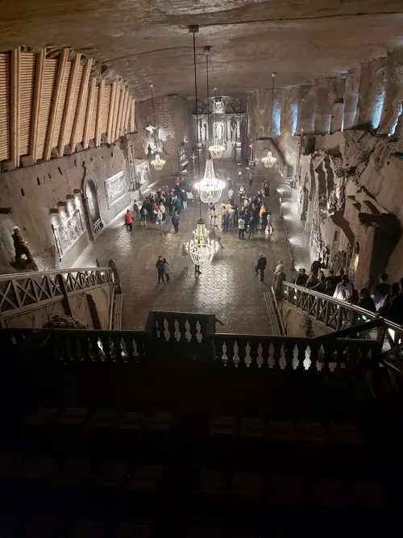

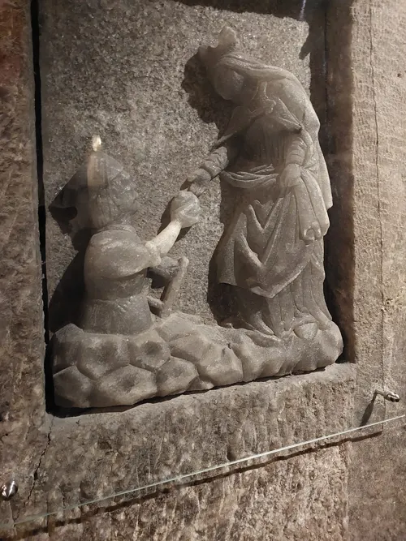

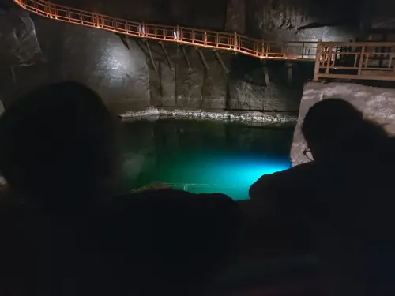

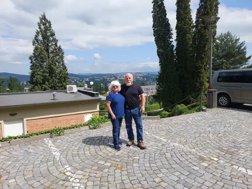

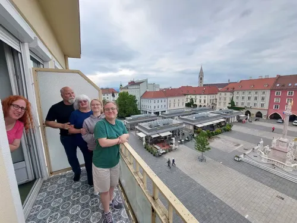

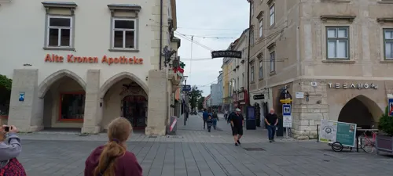

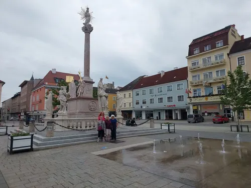

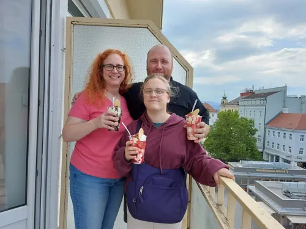